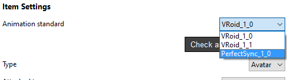

PerfectSync capabilities to .VRM sourced avatars
Animaze features a number of Animation Standards to properly support tracking to animation mappings for differently sourced models (fbx, vrm, glb). These standards are defined by a set of skeletal animations, blendshapes (morph targets), blendshape groups (vrm specific) and skeletal joints (used for procedural animations).
.VRM sourced models imported in Animaze will use the VRoid Animation Standard by default, although this can be changed. This guide will show you how to change the Animation Standard for your .vrm sourced model from the classic VRoid Standard to the Perfect Sync Standard.
The Perfect Sync Animation standard requires 52 face expression blendshapes that are directly compatible with the ARKit face module shapes (full list here). The Perfect Sync standard is custom tailored to .vrm models, so the model should follow the .vrm rules and the blendshapes are accessed through VRM expressions or Blendshape Groups.
Changing the Animation Standard from VRoid to Perfect Sync can be done in a few easy steps:
-
Import your .vrm model in Animaze Editor.
-
Click on the newly imported avatar in the Hierarchy Panel on the left-hand side.
-
Change the Animation Standard from the Inspector on the right-hand side

-
Save the item: right click on the avatar in the Hierarchy Panel and click the Save item button
-
You can now test out the animations through the Avatar Puppeteering panel.
-
The avatar can be bundled and used in Animaze Desktop.